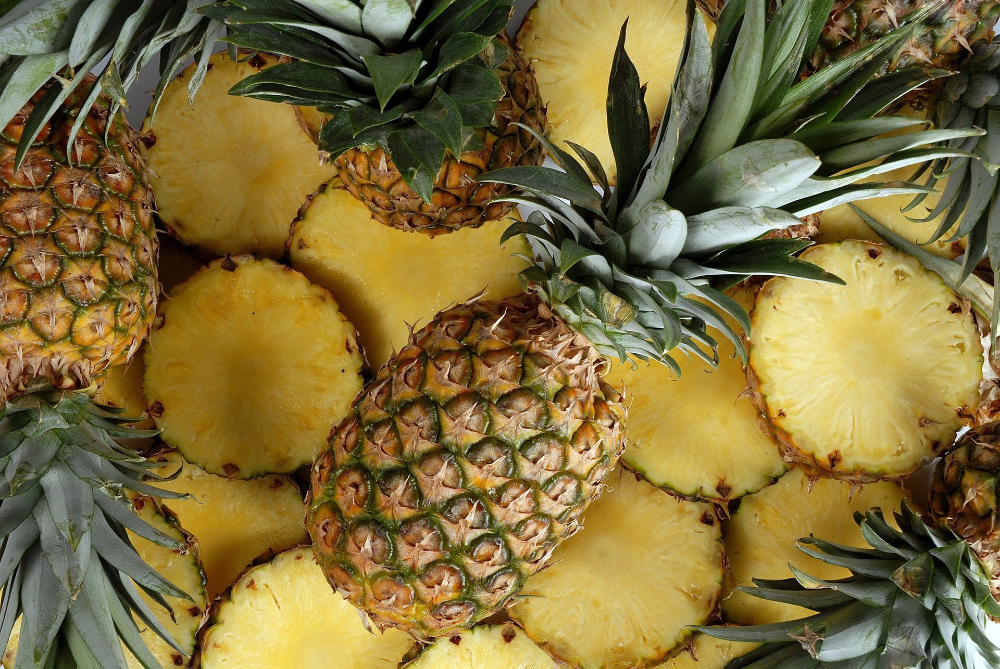

Страницы
Ананасы.Тропическое многолетнее травянистое растение до 60 см высотой, с розеткой длинных, узких, грубых и в то же время сочных (суккулентных) листьев, зубчатых по краю.
Цветки расположены на цветоносном стебле на верхушке, густо по спирали, собраны в соцветие початок. Цветки обоеполые, зигоморфные, с тремя листочками околоцветника, одним пестиком и шестью тычинками. Все цветки срастаются между собою, свободными остаются только верхушки листочков околоцветника и кроющего листа. Тычинки в виде жгута обвивают по спирали столбик. Завязь состоит из трёх плодолистиков, трёхгнёздная, плацента с семяпочками расположена на перегородках по месту срастания плодолистиков.
В той фазе, когда ананас употребляется в качестве фрукта, он представляет собой крупное (до 2 кг), похожее на шишку хвойного дерева, соплодие золотисто-коричневого цвета, с пучком коротких листьев на верхушке, которые развиваются вследствие пролиферации — прорастания цветоноса сквозь соплодие. Соплодие состоит из довольно сочной, но грубоватой оси и отходящих от неё в бока сросшихся между собою чрезвычайно сочных и нежных плодов, несущих на своих вершинках остающиеся и грубеющие части цветка и кроющего листа. Стенки отдельного плода слагаются из плодолистиков и разросшихся листочков околоцветника, цветоложа и кроющего листа, иногда 1 из 3 гнёзд недоразвито.
Семена у культурных сортов ананаса не развиваются. В гнёздах спелого плода легко можно обнаружить мелкие семяпочки, выделяющиеся на фоне стенок гнезда белым цветом. Все части соплодия пронизаны многочисленными проводящими пучками. В осевой части они идут в основном по вертикали, от оси пучки проходят в косом и косогоризонтальном направлении в плоды.
Незрелое соплодие ананаса обладает едкими свойствами, обжигает губы, раздражает стенки желудка, на кишечник действует как сильнодействующее слабительное. Зрелый плод теряет едкие свойства.
Химический состав
Мякоть ананаса на 86 % состоит из воды, в ней довольно много простых сахаров (12—15 мг %), представленных в основном сахарозой, органических кислот (0,7 мг %) — преимущественно лимонной, и до 50 мг % аскорбиновой кислоты. Кроме этого в ананасе присутствуют витамины B1, B2, B6, PP, провитамин A.
Мякоть плодов богата минеральными веществами — калием (до 320 мг %), железом, медью, цинком, кальцием, магнием, марганцем, йодом.
Соплодия ананаса также содержат бромелаин — комплекс протеолитических (то есть расщепляющих белки) ферментов высокой активности. Благодаря бромелаину улучшается усвоение организмом белковых веществ. Злоупотребление же ананасами приводит к повреждению слизистой оболочки рта. В ананасе содержится 40 мг% витамина С (в листьях — до 120 мг%).

Способы нарезки ананаса